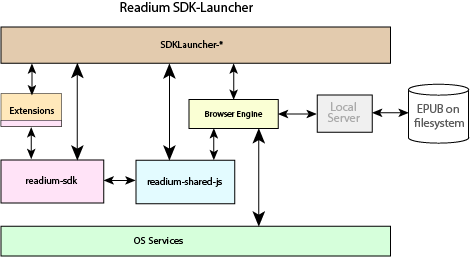
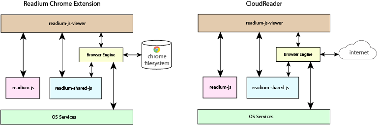

The overall Readium project consists of three sub-projects:
The goal of the SDK is to allow developers to create performant native applications that can run on various desktop and mobile platforms such as iOS and Android as well as desktops. It supports DRM, but in such a way that it is agnostic with respect to the flavour of DRM. Readium has implemented support for LCP, which will be available from the Readium repos. Other DRM flavours, such as Sony DADC and Adobe ACS, can be used with Readium via vendor-specific implementations which are integrated with the readium-sdk core.
ReadiumJS allows developers to create browser-based EPUB reading systems that can be used by end-users across many different platforms. ReadiumJS does not support any traditional DRM methods (though content-specific solutions such as watermarking are of course feasible). As pure JavaScript, ReadiumJS allows developers to use the base Readium implementations or to extend those implementations as they see fit.
LCP aims is to provide a relatively portable, secure rights protection and management that can be used easily with Readium SDK. This DRM is relatively lightweight in that it does not require the rather constraining PKI infrastructure of systems such as Adobe ACS. Instead, it is a simple hashed pass-phrase system that, while still very secure, gives the user more freedom and flexibility in managing their ebooks.
Readium SDK is consists of three major parts:
The diagram below illustrates the high-level relationship of the parts of the architecture.

This is is the Core C++ code that manages the EPUB package, metadata, navigating and fetching resources and so on. The Core is platform-independent. In addition to the C++ core, there are also platform-dependent code layers that provide the interfaces to the platform-specific language layers:
This layer, as its name implies, is pure JavaScript. It provides the interfaces and services between the application layer (in Objective-C, C++, Java or C#) and the Core as well as the web-browser engine instance. This layer is shared across all platforms and sub-projects, including both ReadiumJS sub-projects and all SDK-based applications. It manages messaging between the native layers as well as providing the management of views and other facilities of the browser engine.
These are platform-specific applications that facilitate testing of the rest of the SDK as well as providing a rudimentary demonstration of how to integrate native applications with the SDK. They are deliberately rather limited and crude since it is not the intent of Readium to compete with its own members, many of whose value proposition is integrating the SDK into their sophisticated applications and workflows.
The platforms supported by Readium SDK (as of summer 2015) are
Of course, developers are welcome to tackle porting to and integration with other platforms, but the above are the only platforms against which the Readium SDK is validated and for which Launchers exist.
ReadiumJS comprises two sub-projects, Readium Chrome Extension and the Readium CloudReader. Both consist of three major pieces:
The Chrome Extension and the CloudReader share approximately 95% of their code, the primary difference is where their EPUB "library" is located and how they fetch EPUB resources. The diagram below illustrates the major aspects of their architectures.

This sub-project consists of an extension to Google Chrome. It is a full-fledged, functional EPUB reading system. It supports virtually all of the EPUB 3.0.1 specification. Unlike the Readium SDK Launchers, RCE is a relatively polished, full-featured application. It is under constant development to provide more features and capabilities. It only works with Google Chrome since it leverages the built-in capabilities provided by the Chrome framework. It imports the user’s books into a private file-system on the user’s computer.
The CloudReader is very similar to the Chrome extension – and they share almost all their code. The key difference is that RCE is tightly wedded to Google Chrome and therefor works only where Chrome is available. The CloudReader, on the other hand, runs in almost all browsers. Another distinction is while RCS loads the user’s books into a private filesystem managed by Chrome on the user’s computer, the CloudReader loads its books from a “bookshelf” located somewhere on the web. The CloudReader is downloaded each time the user creates a new instance of the CloudReader. The bookshelf and the CloudReader’s deployed location are typically the same, but do not need to be so.
The only supported platform for RCE is of course Google Chrome. It is validated (tested) on Windows (7 and 8), OSX, and ChromeOS (ChromeBook). It may work on other platforms but we do not test it elsewhere. Chrome apps are not supported on iOS or Android.
The CloudReader is currently validated against the latest version of all major browsers, including:
Again, the CloudReader may (and usually does) run properly on other browser/platform combinations, but Readium does not validate against them.
There are four major parts to the LCP workflow:
The diagram below illustrates a high-level view of a LCP-enabled workflow.

This is the server which encrypts and packages a raw EPUB. The server can also take an exploded EPUB contents and package the contents, encrypting some parts of it. The server has been written in the GO language and is available from the Readium github repository.
This is the piece which reads the necessary information from the encrypted EPUB and decrypts the encrypted portions of the EPUB and provides them to the Readium rendering module. This decryption is done on-the-fly so that the decrypted contents are never on disk where they might be sniffed and/or extracted.
In addition to the basic decryption of the EPUB, there are also several steps required to authenticate the user, obtain and/or store the pass-phrase and so on. These are normally specific to the vendor implementing the Reading System based on the Readium SDK. The Readium SDK does provide some facilities to enable these workflows, but much of the implementation is vendor-specific and outside the SDK itself.
In addition to the server which packages the books for deployment and the DRM-enabled SDK which decrypts the books for reading, there is also some necessary server-side infrastructure needed to support the servers by providing certificates for the encryption process. In order for books to be shared across reading systems, and especially across different Reading Systems, there needs to be a central “certificate authority (CA)” which provides the necessary certificates.